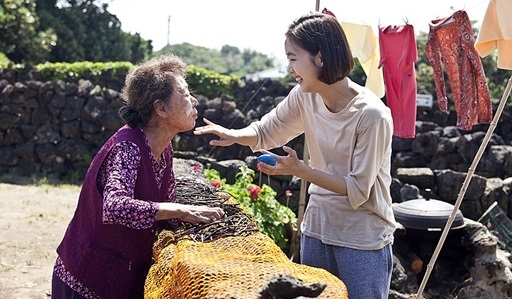

|
|
|
 |
계춘할망
등장인물 : 계춘(윤여정), 혜지(김고은)
- 계춘(윤여정) - 잃어버린 손녀를 12년째 찾고 있는 오매불망 손녀 바보
- 혜지(김고은) - 정체를 알 수 없는 12년 만에 돌아온 불량 손녀
12년 만에 잃어버린 손녀(혜지)를 기적적으로 찾은 계춘과 혜지는 제주도에서 서로에게 적응해 나간다.
어딘가 수상한 혜지에 대해 의심이 커져가고, 혜지는 서울로 미술대회를 나갔다가 사라진다.
알고 보니 혜지는 계춘의 손녀가 아닌 은주였다. 하지만 혜지가 죽고 어쩔 수 없이 은주가 혜지로 살아가게 된 것이었다.
12년 만에 찾은 손녀가 계춘의 손녀가 아닌 걸 알게 된 계춘은 충격으로 치매에 걸리고 은주(12년 만에 찾은 손녀)는 시장에 가서 자신을 찾고 있는 계춘을 찾게 된다.
은주와 계춘은 다시 제주도에서 살게 되지만, 할머니는 돌아가시고, 혜지는 유명한 화가가 된다.
"할망 손주로 와줘서 정말 고맙다…"
|
|